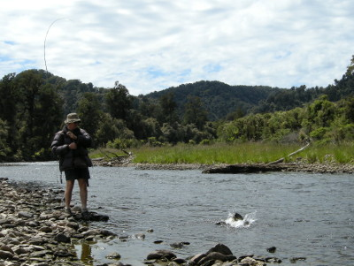
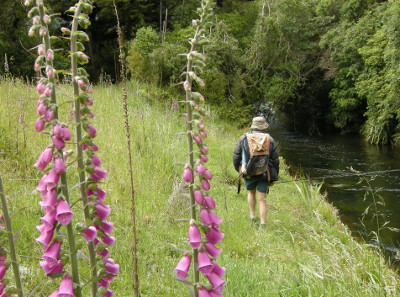
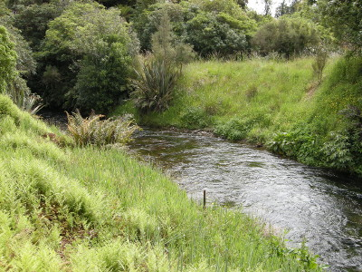

釣行日誌 ＮＺ編 「翡翠、黄金、そして銀塊」
息を呑む光景
2010/11/29(MON)-2
左岸から小さな支流が合流しているポイントに出た。ブリントさんが合流点の上流側の平瀬で１尾中型を掛けた。なかなか激しくファイトして、簡単には手元に寄って来ない。数度のジャンプを繰り返しているうちにフックが外れ、ラッキーな鱒は一目散に深みへと遁走していった。

「やっこさん、ついていたなぁ！」
ブリントさんが笑う。そこから２人は、支流を釣り上がることにして、草むらの岸辺を歩き出した。先導するブリントさんが、細心の注意を払いながら水面と水中を観察し、魚の気配を探す。それほど広くないその支流は、水量が豊富であり、川底の藻を揺らしながら重く静かに流れている。こちら側は草むらががくんと落ち込んでいきなり水辺となっており、向こう岸はブッシュであった。曲がりの少ないスプリングクリークのような状態であり、ポイントを絞るのが難しい。本流ではめぼしいポイントを狙ってブラインドの釣りを続けて来たが、この支流ではサイトフィッシングになった。ブリントさんの眼力だけが頼りである。

名前は知らないが、岸辺には釣り鐘状の花びらを持つピンクの花が咲いており、心を和ませてくれた。
ふと、ブリントさんの歩みが止まり、遠くの水面の１点を指さす。どうやら鱒が居るらしい。その方向をじっと目を凝らして見てみる。何も見えない。（笑） しばらく凝視していると、水面に輪っかが広がった。ライズだ。ブリントさんの指示でフライをグレイゴーストから14番のロイヤルウルフに替え、ライズのあった場所をよく覚えてから、土手を注意深く降りて流れに立ち込む。川底には藻が繁茂しており、柔らかな泥が堆積しているので非常に歩きにくい。数歩歩みを進めて距離を詰める。高さのある岸の草むらから見ていたのと違い、腰まで水に立ち込むと視線の角度が無くなってとても見にくい。鱒の姿はまったく見えないが、それでも何とか見当を付けて、18ftのリーダー・ティペットの先に結んだドライフライを流れに乗せる。
「もう少し、30cm右」
「50cm上流」
指示に応じてキャストを調整する。柔らかにプレゼンテーションされたロイヤルウルフが水面を流下するが、目的地は沈黙したままである。
「うーん、渋いな...フライを替えてみよう」
フライボックスからアダムス12番を取り出し、結び替える。キャスト。そして２投目。
「いかん、やっこさんどこかへ消えてしまった...」
ブリントさんのあきらめの言葉を聞き、こういうこともあるさ、と気を奮い立たせて岸辺にへずり上がる。再び鱒の姿を探しながらの遡行が始まった。歩幅の大きなブリントさんに遅れないよう、早足で歩き、彼が止まるとこちらも止まり、水面を窺った。
徐々に川幅が狭くなってきて、それにつれて流れが速くなってきた。

両岸は急勾配で落ち込んだ土手になっており、上流と下流の岸には灌木が生い茂っている。そこだけ開けたスポットをしばらく凝視していたブリントさんが、
「ここには居ないな...」
とつぶやいて土手の上の小径を上流へ歩み出した瞬間、対岸の水辺がバシャッと波立った。
「！？」
今のは何だ？と目をそちらに向けると、どうしてそれまで見えなかったのか分からないが、大きな魚影が、水際で揺らめいている。
「居るぞ居るぞ！」
どうやらここまで、下流からホワイトベイトを追って遡上して来た大物鱒が集まっていたらしい。さっきの水しぶきは、そのうちの１尾が立てたのだ。注意してじっと対岸の水辺を見つめていると、茶色の影がいくつも草に覆われた岸沿いにぴったり張り付いて、ゆっくりと体を動かしながら定位しているのが見えた。
「１、２、３、４...５！」
全部で５尾の鱒が見えた。ここに居たのか！と２人は顔を見合わせ、姿勢を低くして作戦を練った。ブリントさんの考えでは、あれらの大物鱒は、おそらくホワイトベイトを狙っているであろうから、それを模したストリーマーパターンで攻めるのが良いだろう、ということだった。そして、こちら岸からでは真ん中の速い流れが障害となり、対岸の水際近くにストリーマーを上手く流すことが難しいので、対岸に回り、鱒たちを脅かさないように静かに土手を降りて上流側の流れに立ち込み、ダウンストリームでキャストするのだ、という結論に至った。ブリントさんは見通しの効くこの場に残って指示を出すから、お前は土手の小径を進んで上流にある小橋を渡り、キャスティングポイントまで行くように、という指示に従って対岸に回った。最後に彼が、
「タケシ、太いティペットを使えよ！」
と言った。
釣行日誌ＮＺ編 目次へ
サイトマップ
ホームへ
お問い合わせ